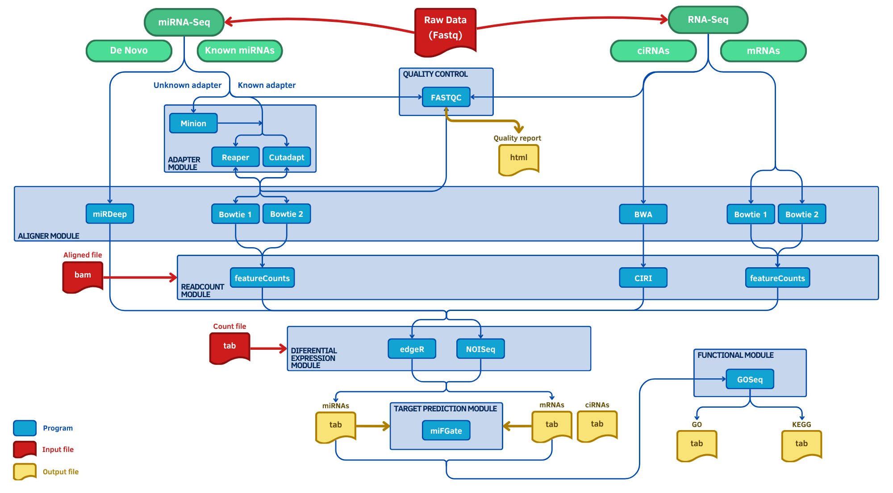

¡Hola! Soy Geni, el asistente inteligente de GenoScribe. Estoy aquí para ayudarte a explorar de forma interactiva el contenido de este informe bioinformático.
Cuando me haces una pregunta, primero intento reconocer si coincide con alguno de los patrones o expresiones que conozco. Si encuentro una coincidencia, te responderé directamente con una respuesta predefinida, diseñada para ser rápida, clara e incluso un poco ingeniosa. Si no reconozco el patrón, entonces activo mis herramientas de búsqueda: genero representaciones vectoriales (embeddings) y busco los fragmentos más relevantes entre varios documentos —incluyendo el propio informe, archivos PDF y HTML externos, y sesiones de preguntas y respuestas (QA). A partir de esa información, creo un resumen que intenta ofrecerte una respuesta coherente y útil basada en el contenido existente.
Se debe tener en cuenta que este entorno es experimental. No utilizo grandes modelos de lenguaje, por lo que algunas respuestas pueden ser aproximadas o incompletas. El objetivo principal es facilitar una visualización rápida, comprensible y reproducible de la información contenida en los documentos, permitiendo una exploración más dinámica del informe.
Actualmente, los resultados pueden variar en precisión, ya que empleo modelos ligeros y locales para asegurar que la aplicación funcione en cualquier entorno sin necesidad de servidores externos. Sin embargo, la estructura del sistema está preparada para mejorar notablemente su rendimiento en el futuro mediante la integración con modelos más avanzados o APIs externas. Para comenzar, simplemente escribe tu pregunta en el campo inferior y deja que yo me encargue del resto. ¡Prometo poner todo mi código en ello!
▼
Esta pestaña tiene un carácter eminentemente técnico y documenta cómo se ha generado el informe, qué datos se han utilizado, qué herramientas han intervenido y cómo se ha organizado el flujo de trabajo. Su finalidad es que cualquier persona que consulte este informe pueda comprender los procedimientos realizados, verificar los resultados y, si lo desea, reproducir el análisis completo con exactitud.
Durante la elaboración del informe, se proporcionan los siguientes parámetros de ejecución:
project_path puede haber varias carpetas correspondientes a diferentes experimentos.
full o compact.
Los datos del informe provienen de un análisis integral realizado conjuntamente con la herramienta miARma‑Seq (Eduardo Andrés-León et al.) y el lenguaje de programación R, procesándose los archivos FASTQ desde la fase de control de calidad hasta la cuantificación de genes y análisis diferencial, incluyendo mRNA, miRNA y circRNA. Esta herramienta (junto con el posterior análisis en R), genera reportes intermedios y finales de cada etapa, permitiendo un flujo de trabajo completo y reproducible.
Una vez finalizado el análisis, Nextflow organiza los resultados y prepara los archivos de configuración que sirven como interfaz con Quarto:
params.yml ⇒ contiene parámetros específicos de la ejecución, rutas de los resultados, nombre del experimento, versión del informe y opciones de visualización.
_quarto.yml ⇒ define la estructura del informe, incluyendo plantillas, pestañas, secciones y rutas internas, generado mediante yaml_generator.py.
Cuando todos los procesos previos han finalizado, Nextflow invoca quarto render, generando el informe HTML final en la carpeta report/. Este flujo asegura que el documento refleje de manera completa, consistente y reproducible todos los resultados transcriptómicos.
Gracias a esta arquitectura modular:
Además, esta pestaña incluye referencias a manuales, repositorios y documentación complementaria, accesibles mediante tarjetas de información. Para cualquier duda o soporte adicional, los datos de contacto se encuentran en la pestaña de inicio.
Tabla de contenidos de esta pestaña
1. Workflows y herramientas empleadas en la generación de resultados
El proceso de análisis de RNA-Seq llevado a cabo en este estudio se sustenta en el uso del pipeline miARma‑Seq (Eduardo Andrés-León et al.), junto con el lenguaje de programación R, permitiendo realizar un flujo de trabajo completo y reproducible desde los archivos FASTQ hasta la obtención de resultados de expresión diferencial y análisis funcional.
La herramienta miARma‑Seq combina múltiples etapas fundamentales en un pipeline modular y configurable: control de calidad de lecturas, alineamiento al genoma de referencia, cuantificación de genes e isoformas, análisis de miRNA y circRNA, identificación de genes diferencialmente expresados y análisis funcional de enriquecimiento biológico. La herramienta genera reportes intermedios y finales que permiten evaluar la calidad de los datos en cada fase y garantizar resultados consistentes y reproducibles.
Gracias a su diseño modular, miARma‑Seq permite ejecutar todo el flujo de análisis de manera automática o seleccionar pasos específicos según las necesidades del estudio. Esto asegura que los resultados sean comparables entre experimentos y facilita la integración en entornos de análisis reproducibles mediante Nextflow y Quarto.
En los siguientes apartados se describen con detalle las principales etapas de ejecución de miARma‑Seq, incluyendo su configuración, el flujo de procesamiento de datos y los tipos de resultados obtenidos.
1.1. Workflow empleado con miARma-Seq
El proyecto de miARma‑Seq es un pipeline integral diseñado para el análisis de RNA‑Seq (mRNA, miRNA y circRNA), desarrollado por Eduardo Andrés‑León et al. y mantenido por el grupo de Bioinformática del IPBLN-CSIC. Esta herramienta permite realizar un flujo de trabajo completo y reproducible desde los archivos FASTQ hasta la generación de resultados de expresión diferencial y análisis funcional, integrando todas las etapas principales de análisis transcriptómico.
El pipeline incluye módulos modulares y configurables que permiten procesar los datos de manera escalable y flexible:
FASTQ mediante FastQC, con reportes individuales y resúmenes globales mediante MultiQC. Esto permite detectar adaptadores, sesgos de composición y problemas de calidad por posición.
Esta herramienta, está diseñada para ser totalmente modular y configurable, permitiendo ejecutar el flujo completo de manera automática o seleccionar pasos específicos según las necesidades del estudio. Esto facilita la integración en entornos reproducibles mediante Nextflow y la presentación de resultados en Quarto, garantizando trazabilidad, reproducibilidad y claridad en la interpretación de datos transcriptómicos.
Toda la documentación, módulos, parámetros y ejemplos de uso de miARma‑Seq están disponibles en su repositorio oficial en GitHub. A continuación se muestra de forma esquemática el workflow completo del pipeline para RNA‑Seq:

Para garantizar reproducibilidad y modularidad, miARma‑Seq utiliza un archivo de configuración con extensión .ini. Este archivo es fundamental, ya que contiene todos los parámetros necesarios para ejecutar cada módulo del pipeline (control de calidad, recorte de lecturas, alineamiento, cuantificación, análisis diferencial y análisis funcional) sin necesidad de introducir comandos complejos en la línea de comandos. En el contexto de este informe de Bulk RNA-Seq, el archivo .ini está configurado para ejecutar todo el flujo de análisis, asegurando que los resultados sean consistentes y reproducibles.
Así, para este informe, el archivo .ini utilizado se encuentra en el siguiente directorio:
/workspace/data/0101-EXT-25-Transcriptomics-Bulk-RNA-Seq/Analisis/miARma_workflow.ini.
Este archivo configura todos los módulos necesarios para el análisis completo de RNA-Seq y se puede consultar para verificar parámetros de control de calidad, alineamiento, cuantificación y análisis diferencial. Dicho archivo puede visualizarse mediante el siguiente iframe o, para más detalle, abrirse en una pestaña nueva haciendo click en el botón correspondiente. Además, es posible descargarlo mediante el botón específico ubicado junto al visor (para que la función de descarga funcione correctamente, se debe abrir el informe (index.html) mediante un servidor, tal como se indica en la pestaña de inicio).
Un archivo .ini en miARma‑Seq está organizado en secciones claramente definidas, como [General], [QC], [Aligner], [ReadCount], [DifferentialExpression] o [FunctionalAnalysis], cada una correspondiente a un módulo específico del pipeline de RNA-Seq. En cada sección se configuran parámetros esenciales, incluyendo:
La ejecución del pipeline en un entorno de High-Performance Computing (HPC) se realiza mediante un archivo de script .sh, que automatiza la carga de módulos, la asignación de recursos (memoria y núcleos) y la ejecución de miARma‑Seq utilizando el archivo de configuración .ini.
Para este informe de Bulk RNA-Seq, el script Slurm.shempleado se encuentra en el siguiente directorio:
/workspace/data/0101-EXT-25-Transcriptomics-Bulk-RNA-Seq/Analisis/Slurm.sh.
Y podemos visualizarlo de forma similar mediante el siguiente iframe, así como prodecer con su respectiva descarga.
Gracias a esta estructura, es posible ejecutar de manera reproducible todo el flujo de análisis de RNA-Seq (mRNA, miRNA y circRNA), incluyendo control de calidad, recorte de lecturas, alineamiento, cuantificación, análisis diferencial y análisis funcional. La modularidad del pipeline permite activar o desactivar pasos específicos según las necesidades del estudio, integrando así un flujo de trabajo completo, escalable y reproducible.
Para más información sobre miARma‑Seq y su pipeline completo de RNA-Seq, se puede consultar el repositorio oficial en GitHub: miARma‑Seq.
2. Estructura de los datos y resultados generados
Una vez completadas todas las etapas del flujo de análisis de RNA-Seq (mRNA, miRNA y circRNA) mediante miARma‑Seq, los resultados se organizan en una estructura de directorios que sirve como base para la generación de este informe automatizado. Esta organización incluye archivos intermedios, resultados finales y metadatos asociados a cada módulo del pipeline, garantizando la trazabilidad y la reproducibilidad del análisis completo.
Esta sección, al igual que el resto de la pestaña de metodología, tiene un propósito puramente técnico y está pensada como referencia interna para el usuario que generó el informe. Su objetivo es permitir comprender cómo se estructuran los datos de salida del proyecto, de modo que sea posible revisar rápidamente la organización de resultados sin necesidad de volver al entorno de análisis original.
A continuación se muestra la ruta del directorio principal donde se encuentran los datos y resultados generados para este proyecto:
/workspace/data/0101-EXT-25-Transcriptomics-Bulk-RNA-Seq
A continuación se muestra la estructura completa de dicho directorio. Esta representación permite visualizar los archivos y subcarpetas generados por miARma‑Seq y que se emplearon como base para la construcción del informe:
Explorar los archivos de la carpeta “0101-EXT-25-Transcriptomics-Bulk-RNA-Seq” aquí
Tras visualizar la estructura de forma interactiva, se presenta a continuación un desglose detallado de las carpetas y archivos generados durante el análisis de RNA-Seq para el experimento mary, perteneciente al proyecto 0101-EXT-25-Transcriptomics-Bulk-RNA-Seq. Esta organización está diseñada para facilitar la reproducibilidad del análisis, la trazabilidad de los resultados y su interpretación posterior.
0101-EXT-25-Transcriptomics-Bulk-RNA-Seq/Analisis/ ⇒ Carpeta principal que agrupa todos los archivos a procesar y los resultados iniciales del análisis, incluyendo los reportes de control de calidad de las muestras y las subcarpetas generadas por miARma‑Seq durante el flujo de análisis completo de RNA-Seq:
mary/ ⇒ Directorio específico del experimento, que contiene las salidas intermedias y finales generadas durante todas las etapas del pipeline:
Pre_fastqc_results/ → Resultados de control de calidad de las lecturas crudas, generados por FastQC y consolidados con MultiQC. Estos informes permiten verificar la calidad general de las secuencias antes de pasar al recorte y alineamiento.
hisat2_results/ → Archivos de alineamiento en formato SAM/BAM obtenidos mediante HISAT2 o STAR, que reflejan cómo las lecturas se mapean al genoma de referencia del organismo estudiado.
Readcount_results/ → Matrices de conteos brutos de expresión génica por gen y por muestra, antes de la normalización. Estos datos son la base para los análisis de expresión diferencial y downstream.
reads_down_select_mary/ ⇒ Carpeta donde se almacenan las lecturas filtradas o seleccionadas específicamente para el análisis de este experimento, listas para ser procesadas por los módulos de alineamiento y cuantificación.
0101-EXT-25-Transcriptomics-Bulk-RNA-Seq/Resultados/ ⇒ Carpeta que agrupa todos los resultados derivados del análisis, organizados para facilitar su exploración y revisión:
targets_mary.txt ⇒ Archivo de metadatos con información sobre las muestras (nombre, condición, replicados, etc.), fundamental para el diseño experimental y el análisis estadístico posterior.
mary/ ⇒ Subcarpeta con productos generados a partir de la matriz de expresión normalizada y los análisis estadísticos derivados:
mary_QC.pdf → Informe gráfico posterior a la normalización. Incluye visualizaciones clave como PCA, clustering jerárquico, correlaciones entre muestras, boxplots y distribuciones de expresión. Estas gráficas permiten evaluar si el preprocesamiento ha corregido adecuadamente la variabilidad técnica sin distorsionar las señales biológicas relevantes.
mary_RPKM.xls → Matriz de expresión génica transformada a valores normalizados en unidades RPKM, adecuada para visualización y exploración comparativa entre muestras.
.xlsx → Resultados del análisis de expresión diferencial para cada comparación experimental. Incluyen medidas estadísticas (logFC, p-valor, FDR) para cada gen evaluado.
Volcano.pdf → Gráficos volcano que resumen visualmente los genes diferencialmente expresados más relevantes, combinando magnitud del cambio y significación estadística.
Enrichment/ → Carpeta que contiene los resultados del análisis funcional y de enriquecimiento basado en los genes diferencialmente expresados (DEG). Para cada comparación entre condiciones experimentales se incluyen:
.pdf → con representaciones visuales (por ejemplo, barplots o dotplots) que destacan los términos funcionales más significativamente enriquecidos.
.xls → con un listado exhaustivo de categorías enriquecidas (GO:BP, GO:MF, GO:CC y rutas KEGG), incluyendo valores de p, FDR y número de genes asociados a cada término.
Esta estructura modular y coherente no solo permite automatizar los pasos clave del análisis bioinformático, sino que también garantiza trazabilidad, reproducibilidad y facilidad de interpretación. Además, contribuye a una mejor documentación del flujo de trabajo, lo cual es especialmente útil en entornos colaborativos o proyectos de largo recorrido.
3. Generación automatizada del informe
Una vez obtenidos los datos procesados mediante el workflow de miARma‑Seq y mostrada la estructura del directorio en el cuál se encuentran los resultados generados a partir de todo el proceso de análisis, el siguiente paso consiste en la generación automatizada del informe final. Esta sección tiene como objetivo documentar de manera clara y reproducible todo el proceso mediante el cual se construye el informe, detallando la organización de los archivos de ejecución, la integración de herramientas y la configuración utilizada.
En particular, se abordarán los siguientes aspectos:
Nextflow para automatizar la ejecución de Quarto y la generación del informe final, describiendo el rol de los scripts principales (main.nf) y cómo se coordinan las distintas etapas del pipeline.
_quarto.yml y params.yml ⇒ Se mostrarán los archivos de configuración que permiten reproducir el informe exacto, incluyendo rutas de entrada, parámetros de análisis y opciones de visualización. Esta documentación asegura que cualquier usuario técnico pueda regenerar el informe con los mismos resultados en el futuro, garantizando trazabilidad y reproducibilidad.
El propósito de esta sección es proporcionar un registro técnico completo del flujo de trabajo utilizado para generar el informe, de manera que cualquier persona que vuelva a consultar el proyecto pueda entender de forma clara cómo se ensamblaron los datos, qué herramientas se utilizaron y cómo se configuró todo el entorno de ejecución.
3.1. Estructura del directorio de ejecución
En esta subsección se describe la estructura de archivos y carpetas desde la cual se ejecuta el pipeline de metagenómica que genera el informe automatizado. Esta información es fundamental para entender cómo se organizan los datos de entrada, los resultados intermedios y los archivos de configuración de Quarto y Nextflow.
La ruta raíz desde la cual se ejecuta este pipeline es:
/workspace/GenoScribe/02-pipelines/01-transcriptomics/01-bulk-rna-seq
A continuación se presenta la estructura completa del directorio correspondiente a este proyecto. Es importante destacar que los elementos listados (tanto archivos como subcarpetas) no representan enlaces interactivos, sino que se muestran únicamente para ilustrar la organización interna de los contenidos. Esta representación permite al lector comprender de manera clara y visual cómo se distribuyen los distintos componentes del proyecto, facilitando la navegación conceptual del directorio sin necesidad de acceder directamente a cada archivo.
Explorar los archivos de la carpeta “01-bulk-rna-seq” aquí
A continuación se detalla la organización principal del directorio raíz del pipeline (01-bulk-rna-seq). Esta descripción está pensada como referencia técnica: indica qué hace cada archivo o carpeta, dónde se guardan los datos generados y cómo se conectan las piezas para producir el report final.
_quarto.yml, index.qmd ⇒ Archivos base de Quarto que definen la estructura del informe (toc, formatos, parámetros globales) y la página de índice. Cada pestaña del informe está representada por un .qmd.
main.nf, nextflow.config, params.yml ⇒ Ficheros de control del pipeline de Nextflow:
main.nf → script principal que orquesta las tareas (organización de los resultados, creación de scripts de configuración y renderizado del informe).
nextflow.config → configuración de ejecución (perfiles, recursos, módulos, rutas por defecto).
params.yml → parámetros concretos del proyecto (paths de entrada, opciones del pipeline) — generado o rellenado por el usuario/Nextflow para cada corrida.
report/ ⇒ Carpeta de salida donde Nextflow / Quarto depositan el informe final (HTML) y materiales derivados listos para compartir.
resources/ ⇒ Repositorio local de recursos y de los resultados consolidados. A alto nivel:
resources/01-essential/ → recursos usados por las plantillas y por los .qmd:
01-images/ → iconos y gráficas (portada, diagramas de workflow, favicon, etc.).
02-archives/ → copias de ficheros de interés (scripts, logs, ejemplos de .ini/.sh) usados como referencia o para descarga en la pestaña de metodología.
03-scripts/ → scripts auxiliares (R, Quarto templates, CSS, JS, Python y Bash) que apoyan la construcción del informe y la generación de artefactos (p. ej. yaml_generator.py).
resources/02-nextflow-results/ → ubicación donde Nextflow consolida los resultados del/los proyecto(s):
01-project-data/{nombre_del_proyecto}/ → copia local del proyecto procesado (entrada + resultados). Nextflow copia aquí los datos de trabajo para que Quarto los consuma de forma estable y reproducible.
02-multiqc-report/ → salida centralizada de los reports de FastQC / MultiQC generados por el QC inicial.
03-analisis-estadistico/ → resultados exportados y productos intermedios listos para análisis estadísticos adicionales (por ejemplo exportes para R, tablas xlsx, gráficas volcán, etc.).
run_cleaning_dir.sh, run_pipeline_shell.sh, run_pipeline_shiny.sh ⇒ Scripts de utilidades en la raíz.
run_pipeline_shell.sh → wrapper para lanzar el pipeline desde la terminal (ejecuta Nextflow con el perfil/params adecuados).
run_pipeline_shiny.sh → invoca una interfaz gráfica (Shiny) que permite ejecutar el pipeline mediante un formulario para usuarios menos técnicos.
run_cleaning_dir.sh → script para limpiar caches y ficheros temporales (útil para liberar espacio, especialmente cuando los resultados y cachés de Nextflow crecen mucho).
Una vez comentada la estructura general del directorio de ejecución, se puede señalar que el pipeline está organizado de manera modular para asegurar la reproducibilidad, la trazabilidad de los resultados y la claridad en la generación del informe. Los archivos .qmd representan las pestañas y subsecciones del informe, mientras que Nextflow se encarga de consolidar los resultados previos, generar reportes adicionales cuando es necesario y coordinar la ejecución de Quarto para producir el documento final.
Dentro de resources/01-essential/03-scripts/02-quarto se mantienen dos versiones de las plantillas: 01-full-version, que incluye la pestaña de metodología y todas las secciones detalladas de análisis, y 02-compact-version, que omite la pestaña de metodología y ofrece una versión más compacta del informe. Cada archivo .qmd corresponde a una pestaña o subsección específica.
Nextflow utiliza los resultados existentes del análisis metagenómico (control de calidad, abundancias y predicciones funcionales) almacenados en resources/02-nextflow-results/01-project-data/{nombre_del_proyecto} y realiza operaciones adicionales como la consolidación de resultados, generación de reportes MultiQC en 02-multiqc-report y preparación de datos estadísticos en 03-analisis-estadistico. Asimismo, genera los archivos de configuración que Quarto requiere, incluyendo params.yml y, mediante yaml_generator.py, _quarto.yml con los parámetros y rutas específicos del proyecto, para asegurar que la renderización del informe sea reproducible y consistente.
Para generar el informe, Nextflow invoca quarto render sobre los .qmd y los archivos de parámetros correspondientes, produciendo el HTML final en report/. Los scripts auxiliares en la raíz del proyecto, como run_pipeline_shell.sh, run_pipeline_shiny.sh y run_cleaning_dir.sh, permiten ejecutar el pipeline desde la terminal, mediante interfaz gráfica o limpiar caches y directorios temporales respectivamente.
Para reproducir un informe exacto, se requiere disponer de la copia completa de los resultados en resources/02-nextflow-results/01-project-data/{nombre_del_proyecto}, así como de los archivos params.yml y _quarto.yml generados durante la ejecución. Esta estructura modular facilita la localización de los archivos necesarios y asegura que cualquier usuario pueda reconstruir el informe de manera consistente.
Para detalles adicionales y pasos exactos de ejecución, se recomienda consultar la guía oficial del proyecto en GitHub: GenoScribe: Guía del Pipeline para Transcriptómica Bull RNA-Seq.
3.2. Integración de Nextflow y Quarto
La integración entre Nextflow y Quarto constituye la base técnica que permite generar de forma automatizada el informe final a partir de los resultados del análisis de RNA-Seq. Este enfoque busca asegurar reproducibilidad, modularidad y trazabilidad, evitando la dependencia de pasos manuales y reduciendo el riesgo de inconsistencias entre los resultados y la documentación generada. A diferencia de un pipeline clásico, en este caso Nextflow no ejecuta los procesos analíticos de miARma-Seq, sino que consume sus resultados ya generados, realiza operaciones intermedias necesarias (copias estructuradas, generación de reportes auxiliares, preparación de parámetros) y finalmente invoca Quarto para la construcción del informe.
El esquema general es el siguiente:
nextflow.config.
params.yml y _quarto.yml).
quarto render para ensamblar el informe HTML final de manera completamente automatizada.
El archivo de configuración nextflow.config, ubicado en /workspace/GenoScribe/02-pipelines/01-transcriptomics/01-bulk-rna-seq/nextflow.config, es el punto de partida de esta integración. Define las variables globales del pipeline, incluyendo:
outdir → Ruta de salida estándar donde se almacenarán los resultados y el informe final.
project_path → Ubicación del proyecto analizado, que contiene la estructura de directorios generada previamente por miARma-Seq y QIIME 2.
experiment_name → Especifica el nombre del específico del experimento analizado ya se puede dar el caso de que encontremos diversos carpetas relativas a distintos experimentos dentro del directorio raíz del proyecto.
report_version → Define la versión del informe a generar (full o compact), lo cual condiciona las pestañas y contenidos que Quarto renderizará.
Una vez comentado esto, podemos visualizar dicho archivo mediante el siguiente iframe, así como explorarlo de forma más detallada en una página completa o descargarlo (hay que abrir el informe mediante un servidor para que esta acción funcione, como ya se ha mencionado).
El archivo main.nf, ubicado en /workspace/GenoScribe/02-pipelines/01-transcriptomics/01-bulk-rna-seq/main.nf, constituye el núcleo del pipeline y orquesta los diferentes procesos necesarios para la preparación del informe. Entre las etapas más relevantes que gestiona este script se incluyen:
resources/02-nextflow-results/01-project-data/. Esto garantiza que Quarto trabaje sobre una estructura consolidada y ligera.
nextflow.config, se generan los archivos params.yml y _quarto.yml (este último, mediante yaml_generator.py), los cuales actúan como interfaz entre el pipeline y Quarto.
quarto render para construir el informe HTML en la carpeta report/. Esto asegura que el informe se genere siempre con datos completos y parámetros consistentes.
De igual modo, podemos visualizar este archivo mediante el siguiente iframe, así como explorarlo de forma más detallada en una página completa o descargándolo.
Este diseño modular permite ampliar o modificar el pipeline fácilmente sin comprometer su reproducibilidad. Al separar claramente las etapas de preparación de datos y la generación del informe, se facilita la trazabilidad de cada componente y se asegura que cualquier informe pueda ser reconstruido en el futuro a partir de los mismos parámetros y estructura de resultados.
3.3. Configuración del archivo _quarto.yml y params.yml
Una vez ejecutado el pipeline de Nextflow, se generan los archivos de configuración _quarto.yml y params.yml. Estos archivos constituyen la interfaz entre el pipeline y Quarto, permitiendo que el último paso del flujo de trabajo ejecute quarto render y construya el informe HTML final a partir de los datos y parámetros proporcionados.
El archivo params.yml contiene todos los parámetros específicos de la ejecución, incluyendo rutas de archivos, opciones de visualización, marcador analizado, versión del informe y metadatos relevantes del proyecto. Por su parte, _quarto.yml establece la estructura del informe, definiendo las plantillas, pestañas, secciones a renderizar y rutas internas, mediante la ejecución del script yaml_generator.py. Juntos, estos archivos permiten que la generación del informe sea completamente automatizada, consistente y reproducible.
A continuación se puede visualizar params.yml mediante un iframe, explorar su contenido de manera interactiva, o abrirlo en una página completa y descargarlo si se desea:
Una vez comprendido el contenido de params.yml, se puede observar _quarto.yml, que actúa como guía estructural para Quarto, indicando qué plantillas y secciones deben incluirse y cómo deben organizarse dentro del informe. Este archivo es esencial para que quarto render genere un documento final coherente con los datos del proyecto.
Esta arquitectura garantiza que cualquier informe pueda ser reproducido en el futuro de manera exacta, siempre que se disponga de los mismos resultados consolidados en resources/02-nextflow-results/01-project-data/nombre_del_proyecto y de los archivos params.yml y _quarto.yml generados por el pipeline. La separación clara entre la preparación de datos y la generación del informe asegura trazabilidad, modularidad y consistencia en los reportes finales.
4. Manuales, repositorios y documentación complementaria
Esta sección final cierra la pestaña de metodología, dirigida principalmente a usuarios interesados en comprender en detalle cómo se ha generado el informe, qué datos se han utilizado y cómo se ha estructurado la integración entre Nextflow y Quarto. La información aquí proporcionada permite acceder a recursos adicionales, consultar la documentación técnica y localizar los repositorios de código para revisar o reutilizar los scripts empleados.
De manera similar a las tarjetas de inicio, se presentan a continuación algunas tarjetas informativas que facilitan el acceso rápido a los recursos clave relacionados con este proyecto:
Repositorio de código
Documentación
Fecha de creación del informe
2026-02-24
Para cualquier duda adicional o consultas de soporte, se puede recurrir a los datos de contacto que se muestran en la pestaña de inicio del informe, donde se incluyen enlaces a la Unidad de Bioinformática del CSIC y al correo de soporte.
{kind=link}